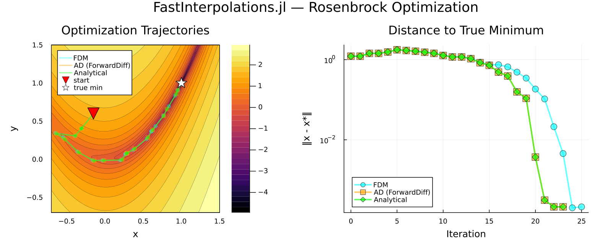

Optimization with Optim.jl
FastInterpolations.jl integrates seamlessly with Optim.jl for optimization problems over interpolated surfaces.
This guide demonstrates three approaches to provide derivatives, ranging from simplest to fastest.
Setup: Rosenbrock on an Interpolated Surface
The classic Rosenbrock function $f(x,y) = (1-x)^2 + 100(y-x^2)^2$ is a standard optimization benchmark. Here we build a cubic interpolant over a 2D grid and optimize it:
using FastInterpolations, Optim
rosenbrock(x, y) = (1.0 - x)^2 + 100.0 * (y - x^2)^2
# Build the interpolated surface
xg = range(-0.7, 1.5, length=101)
yg = range(-0.7, 1.5, length=101)
zg = [rosenbrock(xi, yi) for xi in xg, yi in yg]
itp = cubic_interp((xg, yg), zg; extrap=ExtendExtrap(), bc=CubicFit())Trust-region and line-search methods may evaluate points outside the grid during intermediate steps. ExtendExtrap() extrapolates smoothly from the boundary, preventing errors without distorting the objective landscape near the boundary.
Three Ways to Run Optimization
using Optim: ADTypes
x0 = [-0.15, 0.6] # Initial guess
# ── Method 1: Default (Optim estimates derivatives via finite differences) ──
result = optimize(itp, x0, NewtonTrustRegion())
# ── Method 2: AD packages (machine-precision gradients) ──
# FastInterpolations.jl supports all major AD packages
using ForwardDiff, Zygote, Enzyme
result = optimize(itp, x0, NewtonTrustRegion(), autodiff=ADTypes.AutoForwardDiff())
result = optimize(itp, x0, NewtonTrustRegion(), autodiff=ADTypes.AutoZygote())
result = optimize(itp, x0, NewtonTrustRegion(), autodiff=ADTypes.AutoEnzyme())
# ── Method 3: Analytical derivatives (fastest & accurate) ──
grad!(G, x) = FastInterpolations.gradient!(G, itp, x)
hess!(H, x) = FastInterpolations.hessian!(H, itp, x)
result = optimize(itp, grad!, hess!, x0, NewtonTrustRegion())| Method | Derivatives | Accuracy |
|---|---|---|
| Default | Numerical (Finite Difference) | ~O(h²) |
| AD (ForwardDiff, Zygote, Enzyme) | Automatic Differentiation | Accurate |
Analytical gradient!/hessian! | Direct Analytic Estimation | Accurate |
Method 1 requires zero setup — Optim.jl internally approximates derivatives via finite differences when no autodiff or gradient function is provided, but numerical approximation can be inaccurate or unstable depending on the surface. Methods 2 and 3 both provide exact derivatives of the interpolant (identical to machine precision); Method 3 is recommended for performance-critical loops.
value_gradient — locate-once fg! pattern
For gradient-only optimizers like LBFGS, Optim.jl's only_fg! interface computes value and gradient in one call. value_gradient is the ideal match — it performs interval search only once per query point:
function fg!(F, G, x)
if G !== nothing && F !== nothing
val, grad = value_gradient(itp, Tuple(x))
G .= grad
return val
elseif G !== nothing
gradient!(G, itp, Tuple(x))
return nothing
else
return itp(Tuple(x))
end
end
result = optimize(Optim.only_fg!(fg!), x0, LBFGS())Results

The plot compares Method 1 (finite differences), Method 2 (AD; ForwardDiff) and Method 3 (analytical derivatives) on the Rosenbrock surface. Method 2 & 3 converge faster and more stably. Note that all methods converge to the minimum of the interpolated surface, which may differ slightly from the true analytic minimum at (1, 1) — this is inherent to optimizing over a discrete grid representation.
The full runnable script is available at examples/rosenbrock_optim.jl.
See Also
- AD Support for ND Interpolants — ForwardDiff, Zygote, Enzyme backend details
value_gradient— locate-once value + gradient (ideal forfg!pattern)gradient,gradient!— analytical gradient APIhessian,hessian!— analytical Hessian API